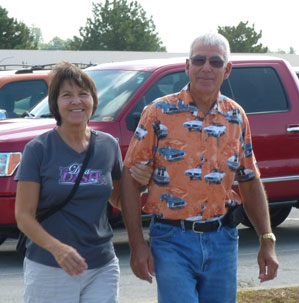
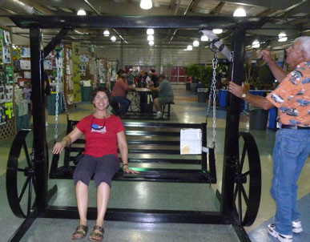
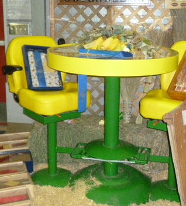
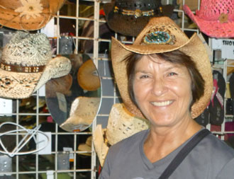
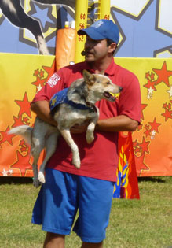
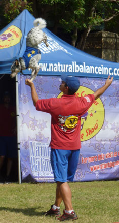
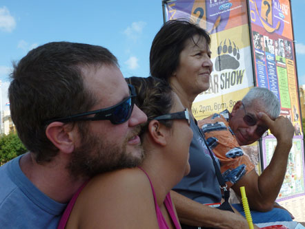
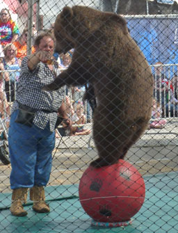

October 3, 2013
| To celebrate my Dad's birthday, the beautiful
weather, and because it was Thursday and we could all take the day off -
we did. Mom, Dad, Desirae, Keith and I spent a day at the Tulsa
State Fair together. Brodie didn't join us because his car-riding
skills make the long trip to Tulsa a challenge, but hopefully by next year
he'll be able to get in on the adventures. We were a pretty wild and
crazy bunch - not! |
|
 |
 |
| Mom and Dad are ready for the fair action | We all really liked this kid's welding project, it was clever and comfortable |
 |
 |
| Another neat project - patio furniture from John Deere tractor seats |
Mom, in one of the MANY hats that were tried on that day. She always keeps us entertained! |
 The dog trick show was really cool. |
 |
| This trick was the grand finale, I enjoyed this show a lot. | |
 Here we wait somewhat impatiently for the bear show to start. |
|
| Desirae gets credit for spotting the potential in this shot. I got a
headache from taking pictures into the sun, but it was worth it for this picture! I love America. |
|
 |
|
| Grizzly bears will do ANYTHING for honey. (Mom might also, but let's not find out! JOKES!!!) |
|